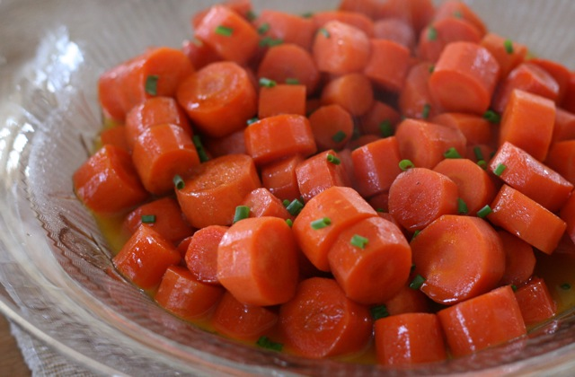

Glazed Carrots

Description
Looking for a simple side dish? It couldn't be easier to make these irresistible glazed carrots with just five basic ingredients.
Ingredients
- 2 pounds carrots, peeled and cut into sticks
- ¼ cup butter
- ¼ cup packed brown sugar
- ¼ teaspoon salt
- ⅛ teaspoon ground white pepper
Steps
- Place carrots into a large saucepan; pour in enough water to reach depth of 1 inch and bring to a boil.
- Reduce heat to low, cover, and simmer carrots until tender, 8 to 10 minutes
- Drain and transfer to a bowl.
- Melt butter in the same saucepan over low heat.
- Stir in brown sugar, salt, and white pepper until dissolved.
- Add carrots to the saucepan and toss until coated in the brown sugar mixture.
- Cook and stir until carrots are heated through and fully coated with glaze, 1 to 3 more minutes.